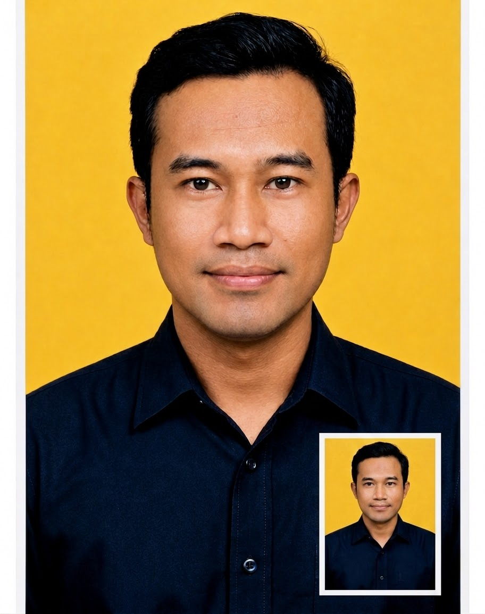
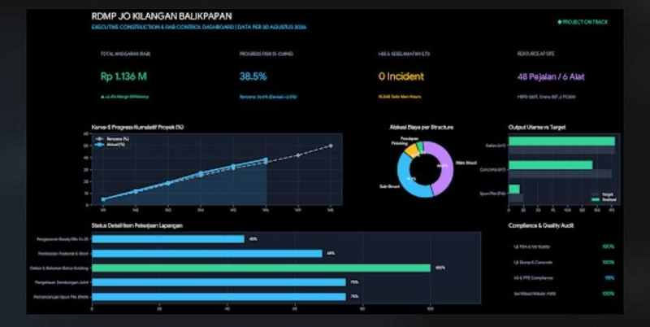
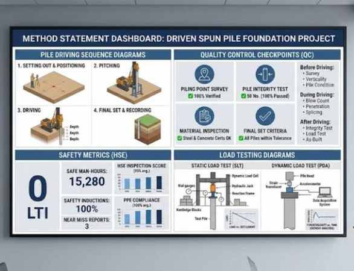
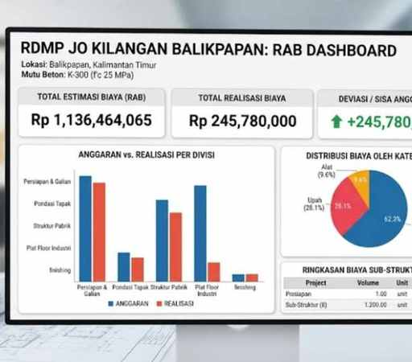
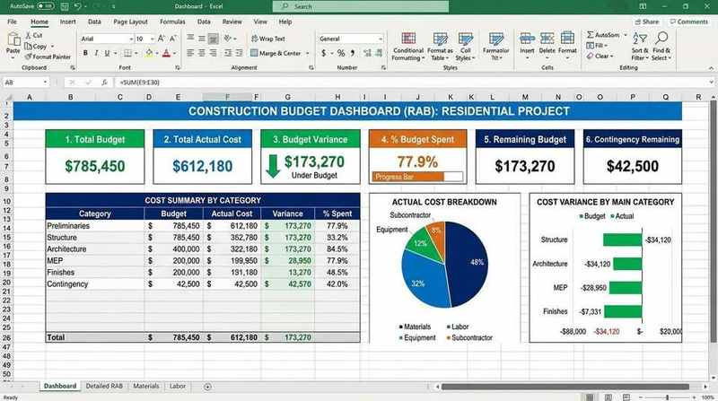

2024 – 2026
PT Avindo Energi Nusantara
Site Manager
- Memimpin pelaksanaan lapangan.
- Mengendalikan progres, mutu, K3.
- Laporan dan stock control.

Fajar Tri Suhartono
Site Manager | Construction · Project Operations · AI Konstruksi
Balikpapan · Jakarta · Batam · Kalimantan Timur · SIM A
Contoh tampilan




Site Manager dengan pengalaman supervisi konstruksi, maintenance planning, manpower planning, monitoring progres, dan pengendalian lapangan.
Terbaru Site Manager PT Avindo Energi Nusantara (2024–2026), termasuk stock control logistik. Freelance: prompt AI dokumen konstruksi.
2024 – 2026
Site Manager
2020 – 2024
Action Supervisor
2019 – 2020
Action Supervisor — Balikpapan
Freelance
Prompt RAB, Method Statement, Shop Drawing dan Laporan Proyek.
Basic
Rp99 rb
Standard
Rp199 rb
PRO
Rp399 rb
Cuplikan RAB / BOQ
| Item | Sat. | Vol. |
|---|---|---|
| Galian tanah biasa | m³ | 120 |
| Urugan + compact | m³ | 80 |
| Pondasi telapak K-250 | m³ | 18 |
| Tulangan D16 | kg | 1.450 |
| Bekisting pondasi | m² | 64 |
Contoh struktur item. Angka klien setelah brief.
Kerangka Method Statement
1
Chat WhatsApp
Kirim jenis dokumen.
2
Brief singkat
Jenis proyek dan lokasi.
3
Draft
Prompt + contoh output.
4
File jadi
Word/PDF + revisi.
PT Avindo Energi Nusantara · 2024–2026
RDMP Balikpapan JO · 2020–2024
Hyundai Engineering · 2019–2020
Dizamatra Powerindo · 2015–2019
PT BUMA Berau · 2012–2015
Akses terbatas
Masukkan kode untuk unduh CV.
Unggah file sebagai CV-Fajar-Tri-Suhartono.pdf agar tombol berfungsi.
SMK TI Pratama Samarinda · 2011/2012
ITB